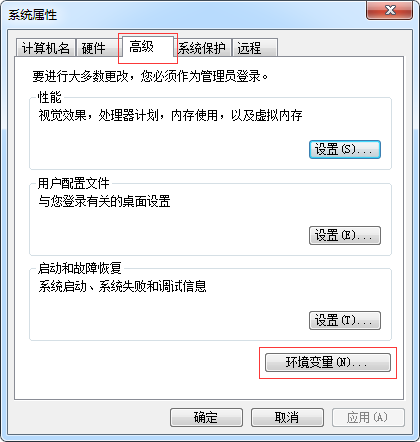

2.搭建Java开发环境：JDK8.0
简介:SDK是什么
SDK全称(Standard Development Kit),标准开放工具包.
java和JDK的关系,就像鱼和水的关系.
下载Java SDK
1.JDK官网下载链接
2.选中Java SE Development Kit 8u144中的Accept License Agreement.
3.选择适合自己操作系统的版本点击链接下载.windows x86是32位版本,windows x64是64位版本.
如图2-1所示:
[图2-1]
安装
点击下一步直到完成,采用默认安装配置.
配置Java环境变量
windows7配置Java环境变量
1.计算机->点右键->属性->高级系统设置
如图2-2所示:
[图2-2]
2.弹出窗口中点击->环境变量
Java环境变量配置如图2-3所示:

[图2-3]
3.配置用户变量classpath
在用户变量栏中点击->新建按钮
Java用户变量classpath配置如图2-3所示:
变量名输入:
classpath
变量值输入:
.;C:\Program Files\Java\jdk1.8.0_144\lib
注意:
变量值由.;加JDK安装目录加lib组成.
如图2-4所示:
[图2-4]
4.配置系统变量Path
在系统变量栏中找到Path->点击编辑按钮增加
;C:\Program Files\Java\jdk1.8.0_144\bin
注意:
添加字符串由;加上JDK安装目录加bin目录组成.
如图2-5所示:
[图2-5]
配置完成重启电脑,使环境变量生效
windows8配置Java环境变量
参考以上配置步骤.
windows10配置Java环境变量
参考以上配置步骤.
注意:
Java默认安装目录C:\Program Files\Java\jdk1.8.0_144.
在jdk1.8.0_144的同级目录有个文件夹jre1.8.0_144,是Java运行环境(Java Runtime
Environment),系统运行Java程序使用.
测试
1.打开命令提示符
鼠标点击桌面左下角windows图标->所有程序->附件->命令提示符
2.测试环境变量
输入命令:
java -version
输出java版本号信息说明配置正确.如图2-6所示:
[图2-6]
3.测试用户变量
输入命令:
javac
输出javac命令行信息说明配置正确.如图2-7所示:
[图2-7]
注意:
如果执行java命令时在命令行窗口提示错误,表示环境变量配置有问题,需要从新配置.
运行java命令提示'java'不是内部或外部命令,也不是可运行的程序或批处理文件
运行java命令提示'javac'不是内部或外部命令,也不是可运行的程序或批处理文件
本节完
恭喜你!狩猎开始！